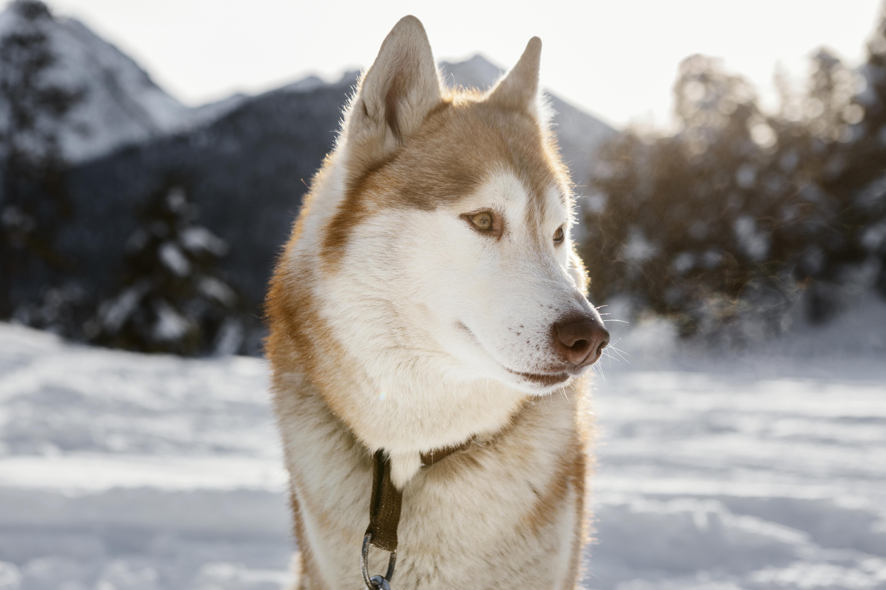

Labrador

Kendt for deres venlige og udadvendte natur, er Labrador Retrievere en af de mest populære hunderacer i
verden. De er intelligente, loyale og ivrige efter at behage, hvilket gør dem til fremragende
familiehunde og arbejdshunde inden for blandt andet rednings- og fører hundearbejde.
Golden Retriever

Lig Labrador Retrieveren er Golden Retrieveren kendt for sin venlighed og intelligens. De er kendt som
"den venlige race" og er ideelle som familiehunde på grund af deres tålmodighed og kærlighed til børn.
Derudover er de også dygtige som servicehunde og i forskellige former for hundesport.
German Shepherd

En af de mest alsidige hunderacer, German Shepherds er kendt for deres styrke, intelligens og
alsidighed. De bruges ofte som politi- og militærhunde på grund af deres fremragende lugtesans og
lydighed. De er også gode som familiehunde, da de er loyale og beskyttende over for deres ejere.
Pomeranian

Til trods for deres lille størrelse har Pomeranianerne en stor personlighed. De er livlige, nysgerrige
og fulde af energi, hvilket gør dem til fantastiske selskabshunde. Deres plyssete pels og kærlige natur
gør dem til populære kæledyr for både enkeltpersoner og familier.
Siberian Husky

Med deres smukke udseende og energiske natur er Siberian Huskies en af de mest ikoniske hunderacer. De
er kendt for deres udholdenhed og evne til at trække slæder over lange afstande, men de er også kærlige
og venlige over for deres familier.
Uanset hvilken race du vælger, er det vigtigt at huske, at hver hund er et individ med sine egne behov og
personlighedstræk. Det er vigtigt at researche og vælge en race, der passer til din livsstil og behov, så du kan
give din firbenede ven det bedst mulige hjem.